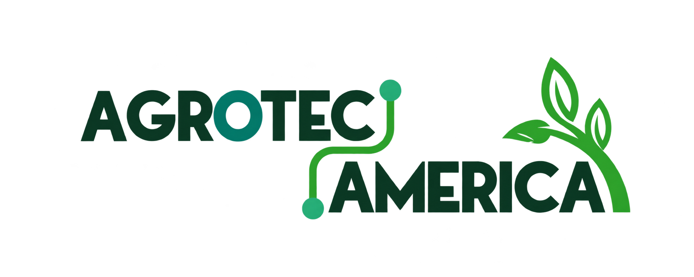

Diagnóstico de aprendizaje
2 min
Empecemos por conocerte
¿Cuál de estas frases se parece más a ti?
Elige la que mejor describa tu momento actual.

Empecemos por conocerte
Elige la que mejor describa tu momento actual.